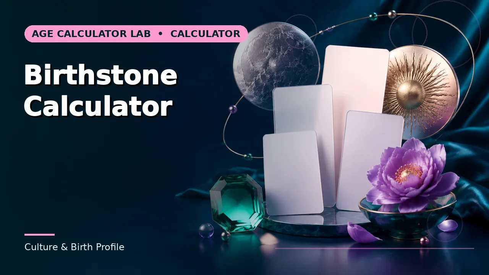
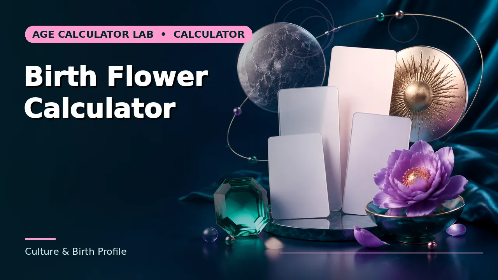
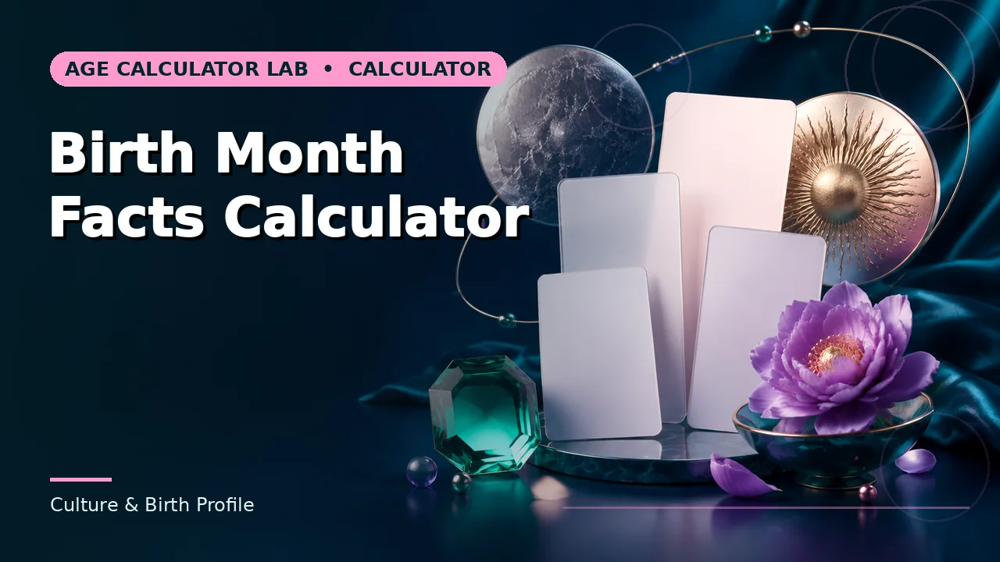

Quick answer
Modern birthstone lists date largely from a 1912 US jewellers' standardisation. Older and regional lists differ, and several months have more than one accepted stone.
The modern list is a commercial standard
The list most people know was standardised in 1912 by the American National Association of Jewelers, drawing on older traditions but making choices for commercial consistency. It has been revised since — tanzanite was added to December in 2002, spinel to August in 2016.
That history explains why it feels authoritative and why it keeps changing. It is a trade standard, periodically updated, rather than an ancient fixed tradition.
Use this guide with the right tool: Open the Birthstone Calculator for traditional birthstone associated with a birth month. If the question shifts, compare it with the Birth Flower Calculator or the Birth Month Facts Calculator.
Multiple stones per month
June has pearl, moonstone and alexandrite. August has peridot, spinel and sardonyx. December has turquoise, zircon and tanzanite. These are not competing claims to resolve; the list genuinely offers alternatives, largely for reasons of availability and price.
Older traditional lists differ further, and British, Indian and other regional lists diverge in several months. If a gift matters, ask which list the recipient grew up with rather than assuming.
Birth flowers
The month-flower tradition is largely Victorian in its current form, tied to the broader language of flowers. Some months have two commonly cited flowers — October gives marigold and cosmos, December gives narcissus and holly — and the lists vary between countries according to what actually blooms there.
There is also a separate tradition of flowers by birth date rather than month, which is less widely known and even less standardised.
Using it well
These are traditions for gifts, jewellery and sentiment, and they work perfectly well as that. Nobody needs to resolve which list is correct, because none of them is correct in a way that would make the others wrong.
The calculator returns the modern standard list because it is the most widely recognised. Where a month has alternatives, treat them as options rather than errors.
Worked example
Swap in your own figures and the method carries over unchanged. What does not carry over is the source of authority, which is specific to your situation.
Common mistakes to avoid
- Assuming one universal list. Modern, traditional and regional lists all differ, and several months have multiple accepted stones.
- Treating the modern list as ancient. It was standardised commercially in 1912 and has been revised since.
- Buying without checking the tradition. Ask which list the recipient recognises. Regional lists differ in several months.
Use the right calculator
Pick the one whose inputs match the information you actually have. Each page explains what its result does and does not cover.



Frequently asked questions
Why does June have three birthstones?
Availability and price. Alexandrite is rare and expensive, so pearl and moonstone remain widely used alternatives.
Are birthstones ancient?
The idea has old roots, often linked to the twelve stones of the breastplate in Exodus, but the modern month list is a twentieth-century commercial standard.
Do birth flowers vary by country?
Yes — the lists reflect what actually blooms locally, so they differ between hemispheres and regions.